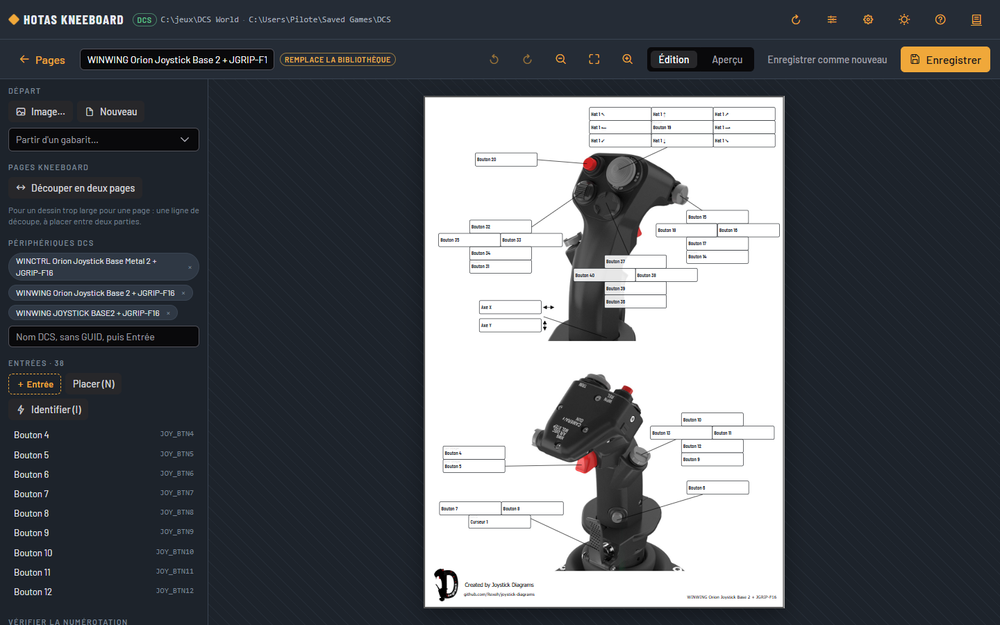
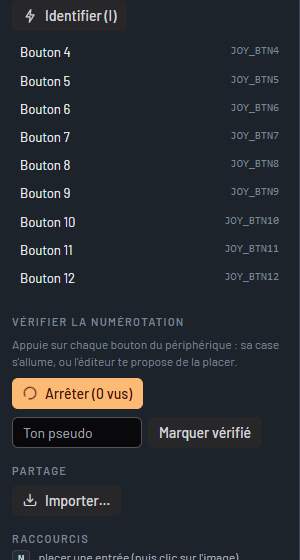

Éditeur de gabarits¶
Un gabarit, c'est le dessin d'un périphérique et la position de chaque bouton dessus. L'éditeur sert à dessiner un périphérique qui n'en a pas, à corriger un gabarit existant, et à le vérifier sur le vrai matériel.
Ouvrir l'éditeur¶
- Depuis la page d'un périphérique : Créer (il n'a pas de gabarit) ou Modifier (il en a un). Le gabarit enregistré sera alors celui de ce périphérique.
- Ou par le crayon, en haut de l'écran, pour un gabarit sans périphérique précis.
Pages ramène à l'écran principal ; l'éditeur prévient si des modifications ne sont pas enregistrées.

Partir d'une image¶
Glisse une photo ou un dessin du périphérique sur la fenêtre (PNG, JPG ou SVG), ou clique sur Image…. Une image vue de face, sur fond clair, avec de la place autour pour les étiquettes, donne les meilleures pages.
Tu peux aussi partir d'un gabarit existant (Partir d'un gabarit…) :
- si c'est le gabarit de ce périphérique, tu le corriges, et ta version passe devant celle de la bibliothèque (la pastille « remplace la bibliothèque » le rappelle) ;
- si c'est le gabarit d'un autre périphérique, l'éditeur en fait un nouveau gabarit pour le tien, sans toucher à l'autre ;
- un gabarit qui ne nomme aucun périphérique (la plupart des gabarits convertis, qu'on choisit à la main) est corrigé sur place, et apprend le nom de ton périphérique.
Placer les entrées¶
Une entrée, c'est un bouton, une direction de hat ou un axe, tel que DCS le nomme. Elle a une case (où s'écrit la commande) et, si tu veux, un repère (un point sur le bouton, relié à la case par un trait).
- Glisse ＋ Entrée sur l'image, ou appuie sur
Npuis clique sur le bouton : un repère se pose, sa case à côté. - Glisse le repère ou la case ; redimensionne la case par son coin orange.
- Choisis l'entrée dans la liste (Boutons 1 à 128, Hats 1 à 4 dans les huit directions, Axes). Choisir une entrée déjà placée échange les deux.
- Avec / Sans repère, 2e case (la même entrée dessinée à deux endroits, sur deux vues du périphérique), Dupliquer (sur le bouton suivant), Supprimer.
Identifier un bouton en appuyant dessus¶
Identifier (touche I), puis appuie sur le bouton du périphérique : l'éditeur reconnaît l'entrée et l'attribue à l'entrée sélectionnée (ou à la prochaine que tu places).
Il passe par la Gamepad API du navigateur, qui numérote les boutons à sa façon : vérifie le numéro qu'il donne, la liste reste la référence.
Si le périphérique vient d'apparaître (le navigateur ne montre une manette qu'après un premier appui), l'éditeur demande d'appuyer une seconde fois.
Un hat est reconnu comme le hat 1, dans ses huit directions ; pour un deuxième hat, choisis-le dans la liste.
Vérifier la numérotation sur le périphérique¶
Vérifier (touche V), puis appuie sur chaque bouton du périphérique, l'un après l'autre :
- si le bouton a sa case, elle s'allume ;
- sinon, l'éditeur te demande de cliquer sur l'image à l'endroit du bouton.
Les boutons vus s'affichent au fur et à mesure, en vert quand ils ont leur case. Une fois tous les boutons essayés et les cases corrigées, indique ton pseudo et clique sur Marquer vérifié : la page ne dira plus « numérotation non vérifiée ».

Découper en deux pages¶
Pour un dessin trop large pour une page (un throttle et sa base), Découper en deux pages ajoute une ligne bleue. Glisse-la à travers une zone blanche, entre deux parties du dessin : elle ne doit couper ni l'appareil ni une case. Ne pas découper la retire.
Aperçu, enregistrement, partage¶
- Aperçu (touche
P) montre le gabarit avec les vraies liaisons d'un module : choisis le module et le périphérique dans la liste. - Enregistrer (Ctrl+S) range le gabarit dans ta bibliothèque,
%APPDATA%\HOTAS Kneeboard\templates\. Le périphérique pour lequel tu l'as ouvert l'utilise aussitôt. - Enregistrer comme nouveau en fait un gabarit de plus, quel que soit le gabarit de départ.
- Exporter télécharge le gabarit en un fichier (
.zip) ; Importer… (ou un glisser-déposer du fichier) l'ajoute à la bibliothèque d'un autre PC. - Supprimer le gabarit retire un de tes gabarits ; si c'était ta version d'un gabarit de la bibliothèque, celui-ci revient.
Pour donner un gabarit vérifié à tout le monde, voir Gabarits.
Raccourcis de l'éditeur¶
| Touche | Action |
|---|---|
| N | Placer une entrée (puis clic sur l'image) |
| I | Identifier en appuyant sur le bouton |
| V | Vérifier : appuyer sur chaque bouton du périphérique |
| Suppr | Supprimer la sélection |
| Ctrl + D | Dupliquer sur le bouton suivant |
| ← ↑ → ↓ | Déplacer (Maj : de 10) |
| Ctrl + Z / Ctrl + Y | Annuler / rétablir |
| + − 0 | Zoom, ajuster |
| P | Aperçu avec de vraies liaisons |
| Ctrl + S | Enregistrer |
| Échap | Arrêter le placement, désélectionner |